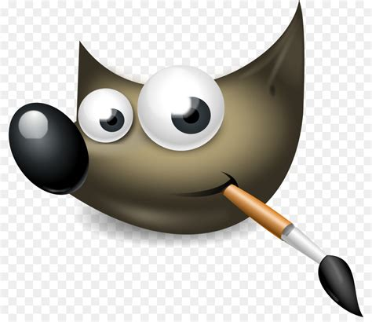
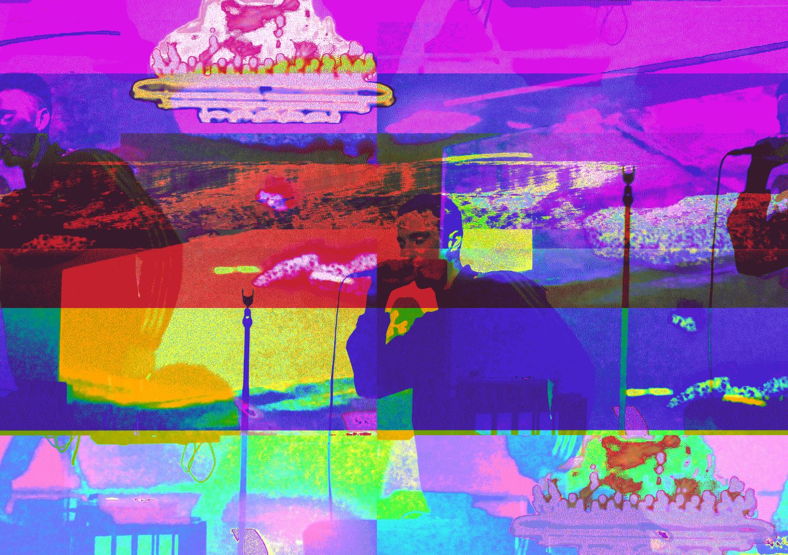
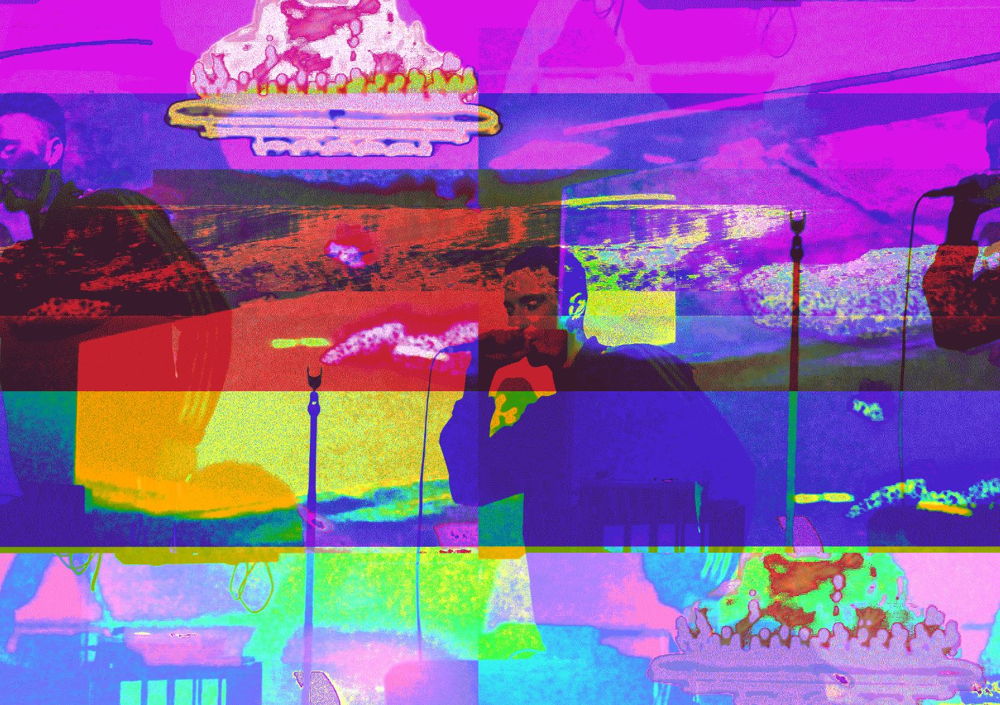

"Audacity is a free, easy-to-use, multi-track audio editor and recorder for Windows, macOS, GNU/Linux and other operating systems. The interface is translated into many languages."
What is glitch art?
The style of glitch art can be defined as utilizing digital and analogue errors for aesthetic purposes. These glitches can be intentional through certain design/image manipulation techniques or they can be accidental. The latter of these two processes is what defines the art style, data that has been corrupted without human intervention. An image file is just information that is processed by a computer to present the output of colour on a monitor. Understanding this convention we do some interesting things. Since images are just data, the process of creating glitch art is essentially data bending. Databending is a term that indicates the manipulation of media files of a certain format and then converting and editing them in software designed for other file types.
“I want to create a desktop application with the purpose to create “glitched” imagery with user ease in mind.” - Me
My project goal is to create some kind of software that gives users specific control over “glitching” images. Something to corrupt the image file so it can create some intriguing and abstract art. There are plenty of mobile apps that claim they can do this but their features are limited and act more or less as filters, they also have limited control over the glitches, which limit users ability to experiment and create unique work, they cannot also export high-resolution image file formats.
You could argue that programs like Adobe Photoshop/Affinity Photo/GIMP can already do what I want to create. You wouldn't be wrong. Those tools have incredible tools to control and produce altered images. However, as an avid user of these tools, I’ve found that unless you know exactly what you want your outcome to be, while also following many steps to get there, the results are not the same. The refined control those programs offer users is exceptional but they have too much control. They lack the "randomness" of glitch art, which at its core is just a file that has had its data corrupted, I'll expand on this idea later. My intention for this project is to take an open-source program like audacity, which edits audio files and turn it into a program that is designed specifically for creating “glitched” images. I'll elaborate more on this in a moment but first we need to ascertain a general overview of these two programs.
My intention for this project is to take an open source program like audacity, which edits audio files, and turn it into a program that is designed specifically for creating “glitched” images. I'll elaborate more on this in a moment but firsts lets acsertain a general over view of this two programs.
What is Audacity?

"Audacity is a free, easy-to-use, multi-track audio editor and recorder for Windows, macOS, GNU/Linux and other operating systems. The interface is translated into many languages."
Here are a few key features of Audacity:
What is GIMP?

"GIMP is an acronym for GNU Image Manipulation Program. It is a freely distributed program for such tasks as photo retouching, image composition and image authoring."
Why is this idea different?
I am an avid photographer who has used many programs to edit photos. My goal is not to replicate and repackage these existing products. I intend to create a high-end image manipulation tool that can make specific alterations while also providing the user with the excitement of creating "randomness" in their data ended imagery. What separates this program from others is that you won't have to follow a series of steps from a tutorial on youtube to figure out how to do one specific thing.
I want users to be able to take various tools used to edit audio files and experiment to see what images they can make with various effects applied. I don't want people to try and replicate glitch art in existing photo editing programs by applying filters, I want people to create glitch images by actually manipulating the data.
 

There are various ways to glitch images. Whether it be an accidental creation of corrupt files, opening the file as text and playing around there, or even using the tools that these other programs offer to produce meticulously crafted images. What I have learned through my journey with experimental photography is that the excitement from creating glitch art comes from the spontaneity of “corrupting” the data from digital image files by using an audio editing program, like audacity, to data bend an image file to produce something unexpectedly beautiful.
The struggle with this process is that there is no easy way to do this without a technical understanding of how it works. I think understanding these technical aspects is beautiful and rewarding in itself. But for a lot of people who don't want to spend their waking hours learning software development, this can be a barrier. This is why I am motivated to create this program, to make glitch art more accessible. Also because I am sick of the process myself and want to streamline it for my own needs. The process is also a little tedious and if you don't follow the steps correctly it might not work.
Creating glitch art in audacity is a process that involves converting the imgae file three times as follows:
Image -> Audio -> Image
Here is the process of glitch images in Audacity:
Full credit to this tutorial needs to go to Question Something for compling this tutorial, which has become my bible for this entire process.
Even though this process has been eleganly compiled by this artist, the process is extemely tedious!
The features of the product.
Aside from the standard features, we expect nowadays from any program (such as AutoSave and copy/paste), I have specific features I want this program to have which will aid in the streamlining of creating glitch art. These ideas are by no means "new" or "groundbreaking", they simply feature I know users would want and need to utilise this program with ease and remove any headaches that may arise without them.
I want these three steps don in the program Image -> Audio -> Image
Tools AND Effects to glitch images
Conversion of image files to audio formats
Preview Mode
Dark and Light Modes
Adding metadata
Help Guide
What do we need?
We don't necessarily have to build a program from the ground up. Audacity and GIMP are open source programs, the source code can be found easily online. We can take those files, cherry pick the code we need and merge them into our own program. Which would hopefully eliminate hours/days of coding.
Source Code of Audacity
Source Code of Gimp
Once we have the code we will then need a platform to build our own on, so we will need a text editing program like Atom, which is designed specifically for coding. Rather than using something like notepad, Atom will help with the readability of the program during the coding process. It has many features but the primary one is that it is integrated with Github. This will make it sufficiently easier to make commits to the code and by sharinging it publicly on Github other programmers can assess the code and provide valuable feedback.
I anticipate many challenges of which I won't know how to resolve...yet.
Knowledge is key and knowledge in programming is what I lack. To overcome the hurdle I will need to understand how to write and read various coding languages. There is also the hurdle of learning how these various scripts will interact with each other.
I also anticipate there being challenges with creating a live preview mode as the files edited in Audacity sound files, so that would require some kind of in-program conversion of the file back to an image so it can be displayed to the user while they apply various "glitches".
There will also be the challenge of creating a function that imports the digital file, regardless of the original image format, into an audio file so it can be edited. On that note I would expect challenges with the exporting process but for the reverse process.
Another challenge is how efficient the program would be at performing all these conversions. I know it can be done but if it takes too long the conversion feature may be redundant, speed will be key.
Like any high-end editing program, there will be some assumed knowledge involved with using this as a tool to manipulate image files. What I think would be a challenge is to translate the more complex side of what is actually happening and have it appear more user-friendly. I think this could be resolved by seeing what terms/theory overlap between photography and music and implement those key words that have associated meaning, rather than create 'new terms', I'm not trying to be Apple.
Commercial viability? Do you want to make money?
These challenging questions are something I have contemplated deeply. My response; I don't care about commercial viability. The intention of this project isn't to make money. My intention is to create a free and easy to use tool for artists/creatives to produce insane work. I'm not opposed to making money, I just don't believe a tool for art creation should be commodified. Although you need money to buy most tools to make art, that's a whole other theoretical discussion on art and capitalism that we don't have time to unpack in this assessment. Not to mention that I have no idea what the legal ramifications are, if any, of taking some open source code and reagraning it to then rebrand it as a product to sell as something else.
I'll entertain the idea of 'commercial viability' for a moment. Yes I do think this is a commercially viable product, for a niche market. It wouldn't outpace the like of Adobe Photoshop. However, it may offer an alternative to a specific means to an ends for creatives who want to create something specific and 'random' at the same time. This product would certainly be far more superior than the 'glitch' art apps I've experimented with on my phone. If I were to attempt to sell this product, I would go full Apple and work on designing an elegant user interface. A lot of people like to make art and want to do it in style.
Do I have the skill to create this right now? What skills are required? How do I plan on gaining those skills?
I currently possess few programming skills. From what I could ascertain from looking at the languages required to write GIMP and Audacity, I will need to learn who to write a variety of coding languages. I am already on track with my goals to learn these languages but still have a long way to go. I will need to learn more about UX and how to create a well designed program that is easy to use and understand. Since I've got an arts background I don't think this would be much of an issue, but outsourcing feedback from people who use tools like this will offer greater insight for improving the product.
Languges Required for the Project:
If the project is successful, what will be the outcome?
The ideal outcome would be a user-friendly program that allows individuals to explore and pursue their creative endeavours through the creation of glitch art.
How will the original problem be solved?
The original problem will be solved by streamlining the process of databending images that can enable greater accessibility to non-tech-savvy individuals.
What is the expected impact this program will have?
This development will have an impact on the broader community by enabling them greater accessibility to explore and create imagery that has been databended and also possibly inspire a thirst for knowledge to learn and understand more about how digital images work.
How will it work?
Once we create an integrated system that takes tools from both programs. My program should be able to manipulate the data of an image file by converting it into an audio file which enables the user to alter the image by: Copying and pasting segments of the audio file in other places Apply various audio “effects” to the audio file which result in different “glitches”. The user then exports the file and they can select the image format they wish to have it reformatted back into.
>>> Home?